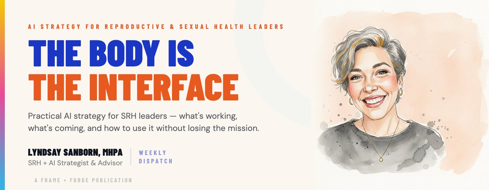

Loading...
25 years inside the reproductive health movement. AI strategy built for it. I help mission-driven organizations use AI that protects patient access, fights misinformation, and doesn't compromise the communities they exist to serve.
Your staff is already using AI. Your board is already asking about it. And the tools being built by the tech industry weren't designed with your patients, your politics, or your risk profile in mind.
The question isn't whether AI is coming to SRH. It's whether you'll be led through it by someone who actually knows what's at stake — or left to figure it out alone.
An AI-powered misinformation detection system built for sexual and reproductive health organizations. It scrapes TikTok and YouTube for SRH content, transcribes video audio, scores claims against medical sources, clusters trends semantically, and delivers provider-ready intelligence digests — with talking points and viral post links — every 1–2 weeks.
Built for Power to Decide in partnership with a national provider-facing SRH platform. Hybrid human-AI validation at every stage.
Before you adopt anything new, understand what's already in your org. I map where AI is showing up — officially and unofficially — and what risks it carries in your specific context.
One-on-one strategic advising to build a values-aligned AI roadmap. I identify the right use cases, flag the real risks, and help you move forward with clarity and confidence.
Custom training for SRH teams navigating AI — from "what is this?" to "how do we govern it?" I meet your team where they are and build real capability.
I don't build the tools — I make sure they get built right. I sit alongside your technical teams as the SRH expert, translating movement knowledge into product requirements and keeping equity at the center.
If you're already using AI tools, I review them for bias, privacy risk, and ethical alignment — then help you build internal policies that hold your technology accountable.
Strategic advising for EDs, senior leaders, and board members — building the confidence and frameworks to lead AI conversations with authority — with the board, with funders, and across the organization.
Conferences, convenings, board retreats, funder briefings. I bring 25 years of SRH experience and hands-on AI implementation to every stage — a combination you won't find elsewhere.
Every engagement starts with a free 30-minute call. No pitch deck. No pressure. Just a direct conversation about where you are and what's actually possible.
A justice-driven exploration of how artificial intelligence is reshaping sexual and reproductive health — and what it means to design digital systems that center care, autonomy, and equity from the start.

I didn't come to reproductive health from tech. I came to tech from 25 years inside the SRH movement — running coalitions, shaping Medicaid and HRSA policy, training clinicians, and watching how systems either protect or fail the communities I care about most.
Most recently, I led AI strategy, enablement, and tool design at Power to Decide — building tools at the intersection of misinformation, patient access, and responsible technology. During this time, I watched the broader tech industry rush to build AI for health contexts without ever having been in a clinic, navigated a post-Dobbs landscape, or sat with what the stakes actually mean for real people. I didn't look away. I got to work.
Frame + Forge exists because this moment is too important to leave to technologists who don't know this work, or to advocates who've been told technology isn't theirs to understand. Someone has to hold both. That's what I do.
Twenty-five years in the SRH movement. Hands-on AI implementation. A rare combination that makes for talks that are technically grounded, movement-rooted, and impossible to find anywhere else on the conference circuit.
I speak at conferences, affiliate convenings, board retreats, funder briefings, and leadership summits — tailoring every session to the room I'm in.
AI is not politically neutral. The communities most affected by reproductive health policy are the same ones most vulnerable to algorithmic harm. I don't add equity as a layer — I start there.
SRH is complicated. Post-Dobbs risk is complicated. I don't flatten that complexity to move faster — I help organizations hold it clearly and make defensible decisions inside it.
You can't govern what you can't see. Before I recommend anything, I help organizations understand what's already happening — in their vendor stack, in their staff's browser tabs, in the data moving without anyone's knowledge.
I don't arrive with answers. I arrive with 25 years of context and the discipline to understand your specific situation before I suggest anything. The best solutions come from the room — not from a slide deck.
Nothing should change without visibility. Nothing should ship without ownership. I build systems and advise on systems where humans stay in the loop and the audit trail never disappears.
The people most affected by reproductive health decisions are the ones who should shape the technology that serves them. Not as an afterthought. Not as a focus group. As the authority.
I started in this work at 14 — as a peer educator at a Title X family planning clinic in New Hampshire. That's where I first understood what it means to have access to care, and what it costs when you don't. I've never left this work since.
New England is home. I ski it, kayak it, hike it, and sit with it in the quiet. I paint in watercolor — mostly landscapes — and I knit, slowly and intentionally, which I've decided is good for the soul. Whether I'm reading a river or reading a workflow, I bring the same thing: patience, attention, and a genuine need to understand what's actually going on before I touch anything.
Every engagement starts with a free 30-minute conversation. No pitch deck. No pressure. Just a real conversation about your work and what's possible.
Now I Help You Navigate What's Coming.
Patients. Staff. Community. Mission. That's what's actually at stake when your organization meets AI — and most consultants have never been in the room where that matters most.
I'm not here to sell you on technology. I'm here to help you understand it, govern it, and use it in ways that keep the people you serve safe — and keep your organization true to why it exists. That's a different kind of work. It requires someone who knows both worlds from the inside.
Understand where AI is already showing up in your org, what risks exist, and what's actually possible.
Build a values-aligned roadmap. Train your team. Govern what you already have before adding anything new.
Build the acumen, skills, policy, and governance your organization needs to work with AI — and against it — with clarity, confidence, and mission intact.
Most clients start with a diagnostic. Every engagement is scoped to where you actually are.
Before you adopt anything new, you need to understand what's already in your organization — officially and unofficially. Staff are using AI in patient messages, grant narratives, and clinical summaries right now. This assessment maps where AI is showing up, what risks it carries in your specific context, and what a responsible path forward looks like.
This is where most clients start. It gives you the clarity to lead the conversation with your board, your funders, and your team — and a foundation for every decision that follows.
You're not exploring AI for innovation's sake. You're trying to reach more people, protect sensitive data, and make limited resources go further — in an environment where the wrong tool can expose your patients to real harm. I build a clear, values-driven strategy tailored to your organization's specific context, risk profile, and community.
I identify your highest-value use cases, name the risks your communities face that generic consultants won't know to ask about, and give you a plan you can actually execute with your current team and budget.
Your staff is already navigating AI — most of them without guidance, policy, or support. I design custom training that meets your team where they are: from foundational AI literacy for clinical staff to advanced sessions on equity, bias, data privacy, and governance for leadership.
The goal isn't just to teach skills. It's to help your team understand the stakes, ask the right questions, and feel genuinely confident making decisions in a fast-moving landscape.
The SRH movement needs AI tools designed with deep understanding of reproductive health — the clinical realities, the political context, the communities at stake. What it rarely has is someone who can bridge the gap between that knowledge and the engineers doing the building.
I work alongside your technical teams or vendor partners as the SRH expert in the room — translating movement knowledge into product requirements, flagging equity and safety issues before they're baked into the architecture, and ensuring what gets built actually serves the communities it's meant to reach.
In a post-Dobbs, high-surveillance environment, the AI tools your organization uses carry real legal and safety risk for the communities you serve. "HIPAA-compliant" is not the same as safe. I assess your existing tools for bias, privacy risk, and ethical alignment — then help you build internal policies that are simple enough for staff to actually follow and strong enough to protect the people you serve.
Your ED is fielding questions about AI from the board. Your board is fielding questions from funders. And nobody in the room has a framework for answering them responsibly — or confidently. I work directly with executive directors, senior leadership, and board members to build that confidence and close that gap.
This isn't generic coaching. It's strategic advising grounded in 25 years of SRH movement experience — helping leaders understand what AI means for their mission, their risk profile, and the communities they serve, and preparing them to lead internal and external conversations with authority.
Conference stages, affiliate convenings, funder briefings, board retreats — the SRH field needs speakers who can talk about AI without losing the thread of what this work is actually about. I bring 25 years of movement experience and hands-on AI implementation into every room I'm in.
I speak on topics where I can offer genuine insight — not just talking points — because I've done the work and lived in this field. Every session is tailored to your audience, whether that's clinical staff, executive leaders, policy advocates, or funders.
Most clients begin with a diagnostic. It's the fastest way to understand where you are, what you need, and what's actually possible.
Nonprofit and mission-driven pricing available. Every engagement begins with a free 30-minute call.
Ethical AI. Reproductive Health. Real Communities.
Twenty-five years inside the SRH movement. Hands-on AI implementation. A rare combination that makes for talks that are technically grounded, movement-rooted, and impossible to find anywhere else on the conference circuit.
Conference stages, affiliate convenings, board retreats, funder briefings, and leadership summits — I tailor every session to the room I'm in.
Ethical AI and governance — to executives, to mission-driven teams, and to the SRH movement.
Invited by the Executive Director of HDAA — 60-minute session for the Women in Analytics community on bias and ethics in AI as it relates to reproductive health.
Open community session on values-led AI adoption in hiring practices.
90-minute virtual convening. Speakers: Rebecca Davis (VP Marketing, Hey Jane), Amanda Ducach (CEO, Ema), Tom Subak (Founder, Re/Imagination Lab), and Lyndsay Sanborn (Founder + Principal Strategist, Frame + Forge).
In conversation with Raela Ripaldi on why AI tools so rarely serve low-income patients, rural clinics, and communities of color.
“The ‘no money to be made there’ answer is a cover story. Developers, funders, and product teams keep making the same choice — to build for white, upper-class users and call it a universal solution. That’s a design choice. And it’s a continuation of the same systems reproductive health advocates have been fighting for decades.”
Practical session for CEOs and senior leaders — introducing the AI Inventory, AI Fit Test, and CLEAR Framework for defensible, values-aligned governance.
Strategic briefing for Planned Parenthood leadership on how AI can serve mission-aligned, defensible decision-making.
If you're planning a convening, summit, board retreat, or leadership briefing, let's talk about what would land for your audience.
Book Me to Speak →Real organizations. Real stakes. Real results. Every project on this page was built from inside the movement — not handed down from a tech company that found SRH interesting for a quarter.
AI-powered misinformation detection across TikTok and YouTube for SRH organizations.
28-page governance guide with 3 original frameworks for mission-driven leaders.
Internal GPT built to support content creation and infrastructure for a national provider-facing SRH platform.
Custom AI literacy curriculum for sexual and reproductive health nonprofit leadership.
Autonomous system tracking SRH conversations on Reddit for data-informed strategy.
Real-time Reddit intelligence platform monitoring 75+ subreddits for STI conversations.
Custom Python agent verifying 86 clinics across 48 data fields for patient safety.
18-slide leadership framework with 3 original AI governance frameworks.
Interactive screening tool that evaluates vendor privacy policies against SRH-specific accountability standards.
Weekly AI-powered intelligence reports from Reddit conversations your patients and communities are already having.
Reproductive health misinformation doesn't wait for business hours. It spreads on TikTok and YouTube while your team is offline — and by the time someone flags a viral post, thousands of patients have already seen it. This pipeline was built to close that gap.
The system continuously scrapes TikTok and YouTube for SRH-related content using Apify agents, transcribes video audio with OpenAI Whisper, analyzes claims against trusted medical sources using a custom rubric-scoring model (0–14 scale), clusters trends semantically, and delivers a curated intelligence digest to members of a national provider-facing SRH platform every 1–2 weeks — with provider-ready talking points, viral post links, and suggested responses.
A hybrid human-AI review loop validates every flagged item before it reaches providers, maintaining accuracy and accountability at scale.
"During our time working together to build a tool that helped our organization better understand how young people were talking about birth control on social media, I saw firsthand her ability to navigate nuance. She brought a strong equity-centered lens to the work, ensuring that insights were grounded in the lived experiences of the communities we serve."
Most AI governance guides are written for tech companies. This one is written for the ED who just found out a staff member has been pasting patient summaries into ChatGPT — and doesn't know what to do next. It's a 28-page governance guide for leaders who want clarity, confidence, and defensibility without a law degree or a technical team.
The roadmap introduces three original frameworks developed by Frame + Forge: the CLEAR Control Center (a five-gate decision framework for every AI use case), the AI Governance Readiness Gate (a pause-first screen for new adoption), and a 90-Day Visibility and Governance Plan that moves organizations from uncertainty to defensibility. It includes a board briefing summary designed to be extracted and handed directly to board members, an AI inventory worksheet, a vendor accountability checklist, and a glossary written for leaders, not engineers.
Designed to be shared across the organization — from frontline staff to the board chair. Because the more people who see the same picture, the faster governance takes hold.
A custom-built internal GPT created for Power to Decide to support a national provider-facing SRH platform. The tool held all program branding, content, and infrastructure — serving as an internal resource used to support the creation of content, communications, and operational materials for the initiative.
Built with domain-specific guardrails for reproductive health: the GPT was scoped to the platform's materials, maintained brand and messaging consistency, and avoided generating content outside its trained domain. Designed to accelerate internal workflows while maintaining alignment with evidence-based SRH guidance and organizational standards.
Custom AI literacy curriculum designed specifically for sexual and reproductive health nonprofit leadership — covering AI capabilities, risk frameworks for sensitive data environments, and practical governance approaches. Delivered across organizations of varying size, budget, and technical capacity.
Real people asking real questions about reproductive health don't always do it in clinical settings or on official platforms. They do it on Reddit — anonymously, candidly, and at scale. This autonomous monitoring system tracked SRH-related Reddit communities continuously, surfacing what patients and the public were actually asking, worrying about, and getting wrong — in their own words, without requiring manual review or human-initiated searches.
Running without intervention, the system identified trending questions and concerns, flagged emerging misinformation themes, and delivered structured digests to the national SRH platform, AbortionFinder, and Power to Decide teams on a regular cadence. Content strategists, educators, and communications leads received a direct, ongoing line to the real-world information needs of the communities they serve — allowing content strategy and educational material development to be shaped by what the data revealed, not assumptions about what audiences needed to hear.
A fully custom analytics platform that monitors over 75 Reddit subreddits in real time, tracking public conversations about STIs using keyword-based aggregation. The dashboard surfaces sentiment analysis, emerging trends, condition-specific discussion volumes, service gaps, and public health event correlations — all updated continuously without manual intervention.
Communications teams, content strategists, and program leads can generate on-demand reports directly from the dashboard to inform content development, messaging strategy, and program design based on what communities are actually asking and feeling — not what organizations assume they need.
Title X clinic directories go stale constantly — and a patient who follows bad data to a clinic that no longer provides services faces real consequences for their care and access. This isn't a data hygiene problem. It's a patient safety problem.
I built a custom autonomous Python agent to verify all 86 Title X-funded family planning clinics against official sources only — 48 data fields per clinic covering birth control methods, STI testing capabilities, financial assistance options, and funding status. The system used network-based batch processing to reduce verification time by 60–70%, a color-coded change tracking system for immediate status identification, and a human-in-the-loop review process ensuring nothing was overwritten without confirmation. Complete audit trail at every step.
Every SRH organization uses digital vendors — EHRs, telehealth platforms, analytics tools, chatbots. Most evaluate them on features and price. Almost none evaluate them on whether their privacy policies would protect patients in a post-Dobbs legal environment. This tool was built to close that gap.
The Digital Vendor Accountability Check is an interactive screening tool that walks organizations through the critical privacy and data governance questions they should be asking before signing — or renewing — any vendor contract. It evaluates vendor privacy policies against SRH-specific accountability standards covering data sharing, law enforcement disclosure, geolocation tracking, reproductive health inference, and more.
Built as a free resource for the movement. No login required. No data collected. Just the questions your vendor doesn't want you to ask.
Your communities are talking about their reproductive health online right now. They're asking questions on Reddit about birth control side effects, sharing abortion access experiences, debating clinic recommendations, and spreading misinformation — all in real time, all outside your view. Repro Intel was built to put you back in the room.
Repro Intel is an AI-powered intelligence product that monitors reproductive health conversations across Reddit, transforms them into strategic insights, and delivers weekly reports designed for SRH organizational leaders. Each report surfaces what your communities are actually saying — the concerns, the misinformation, the gaps in care — and translates it into actionable strategy your team can use immediately.
Built for the movement, by someone inside it. Currently in early access.
An 18-slide leadership framework making the case that AI governance is a leadership responsibility — not a compliance exercise. Introduces three original frameworks: the AI Inventory, the AI Fit Test, and the AI Leadership Test. Presented to Planned Parenthood affiliates with real case study proof points and a practical roadmap for moving from diagnostic to safe implementation.
Every project on this page started with a 30-minute conversation. Let's have one about yours.
Analysis, frameworks, and honest takes on AI for SRH — written for leaders who need to understand what's happening and what to do about it.
My weekly publication for SRH leaders, clinicians, and advocates — honest analysis of what AI is doing to reproductive health, and how to use it to fight back.
Every engagement starts with a free 30-minute strategy call. No pitch deck, no pressure. Just a real conversation about your organization, your work, and what's actually possible with AI right now.
Whether you're exploring where to start, have a specific project in mind, or just want to pressure-test an idea — this is where that starts.
I respond within 24 hours.
Pick a time for a free 30-minute strategy call. No prep required.
Book a Time →A justice-driven exploration of how artificial intelligence is reshaping sexual and reproductive health — and what it means to design digital systems that center care, autonomy, and equity from the start.
The Body Is the Interface isn't an AI newsletter. It's an SRH newsletter that takes AI seriously — written by someone who has spent 25 years inside the reproductive health movement, not just observing it from the outside.
Every issue is written for clinic directors, policy advocates, program managers, and clinicians who need to make real decisions about AI — without the hype, without the jargon, and without losing sight of who this work is actually for.
Free analysis delivered to your inbox. For SRH leaders who need to understand what AI is doing to their patients — and how to use it to fight back.
Subscribe Free → No spam. No paywalls. Just signal.If you're ready to move from reading about AI to actually building responsible AI systems for your organization — Frame + Forge is where that work happens.
For reproductive health organizations. Test what AI chatbots are telling your patients right now.
6 prompts. 4 platforms. The answers will change how you think about your digital strategy.
Copy each prompt into the listed platforms. Screenshot the results. Compare what AI says to what your organization actually does.
Does AI list your clinic? Or does it route patients to a crisis pregnancy center instead? In ban states, does it say abortion is completely unavailable, even if you offer telehealth or referrals?
Does it overstate risks that evidence shows are exceptionally rare? Does it mention “abortion pill reversal” or link to a Heartbeat International hotline? The WHO deemed self-managed medication abortion safe and effective in 2015. Does the AI reflect that?
Does the AI refuse to answer? Does it only cite state law without mentioning legal options like shield law states or telehealth? Does it tell people to “consult a doctor” in a state where doctors can’t help them? Vague answers in ban states cause real harm.
Does it repeat debunked myths about infertility? Does it add excessive caveats that make safe contraception sound dangerous? When you ask about teens, does it refuse to answer or redirect to a parent? Meta’s AI won’t discuss contraception with minors at all.
Google AI Overviews have been caught recommending crisis pregnancy centers for legally required ultrasounds without disclosing that CPCs can’t satisfy the state requirement. Does AI send your patients to a facility that will delay their care?
Compare the tone, length, and number of caveats. Medication abortion has a safety profile comparable to Tylenol. Does the AI treat them the same way? Or does it add paragraphs of warnings to one and answer the other in two sentences? That gap is the safety tax.
Document the date, platform, and exact prompt. AI responses change. Timestamp matters.
Comms, digital, program staff, and providers need to see what patients are seeing before they walk in.
This is a structural problem. Decision-makers need to see the gap.
Models update. Training data shifts. What AI says about you today will change. Track it.
I work with reproductive health organizations navigating AI risk, governance, and strategy. If your team needs help understanding what AI is doing with your information and how to respond, that’s exactly what I do.
From Invisible Risk to Intentional Leadership. A field guide with three tools your organization can use this week.
By Lyndsay Sanborn, MHPA · Version 1.0 · April 2026
Get the printable field guide with all three tools ready for your next leadership meeting.
How to Use This Guide
If you have 10 minutes: Read sections 1-4. You'll understand the stakes and why this can't wait.
If you have a leadership meeting this week: Go straight to section 10 (AI Inventory) and section 14 (Board Framing).
If you want to share this with your team: Send each team lead their section from "Find Your Team, Find Your Risk."
If you need to start a vendor conversation: Section 11 (Five Questions to Ask Your Vendors) is ready to use as-is.
Before your patient walks through the door, before they schedule the appointment, before they even know your clinic exists, they have already had a conversation about their care.
Not with a friend. Not with a doctor. With ChatGPT.
They typed something at 2am because they were too afraid to call a clinic, too afraid to ask a friend, too afraid to Google it where someone might see. They asked about a missed period. About whether the pills were safe. About what happens if they're undocumented and need an abortion in Texas. They asked the AI because it felt like the safest, most private option available to them.
It was neither safe nor private. There is no legal privilege protecting that conversation. No HIPAA. No doctor-patient confidentiality. That conversation is a stored corporate data record that can be subpoenaed. And the information they received was likely incomplete, inaccurate, or actively harmful.
They arrived at your clinic with beliefs shaped by an algorithm that doesn't know them, doesn't know your work, and wasn't built with their safety in mind. Your provider is now treating not just the patient, but the misinformation they absorbed before they got there.
This is today, in your waiting room.
A peer-reviewed study published in Frontiers in Digital Health found that ChatGPT repeatedly overstated the risks of self-managed medication abortion, directly contradicting established clinical evidence that it is safe and effective.
A Bloomberg investigation in November 2025 found five major AI chatbots routinely directing users asking about abortion to a hotline promoting "abortion pill reversal," a practice rejected by ACOG as unproven and potentially harmful.
In October 2025, DHS obtained the first known federal search warrant compelling OpenAI to disclose a user's full ChatGPT history. Every conversation, every prompt, IP logs, payment data. The legal template now exists for state attorneys general.
In May 2025, a federal court ordered OpenAI to preserve all ChatGPT conversation logs for consumer account users, including conversations already deleted. That data exists on OpenAI's servers under legal hold.
The person who typed "I'm in Texas, what are my options?" into ChatGPT at 2am has left a more detailed, more searchable, more legally actionable record than they would have by calling your clinic.
Your patients don't know this. They need to hear it from you.
Adapt this language for waiting rooms, post-appointment materials, social media, and your website:
"AI chatbots are not confidential. When you ask ChatGPT, Gemini, or any AI tool about abortion, your symptoms, or your options, that conversation is stored and can be handed over to law enforcement with a warrant. This has already happened. Call us instead. What you tell your provider is legally protected in ways that AI chatbots are not."
One additional thing your organization can do: publish more plain-language clinical content. AI is trained on what's publicly available. The reproductive health internet is saturated with anti-abortion content produced at scale. Every accurate, accessible piece your organization publishes enters that training ecosystem. Most reproductive health organizations are dramatically underinvested here. The information you don't publish is a gap that misinformation fills.
Your staff is already using AI. A development director is drafting grant narratives in ChatGPT because it's faster. A clinic manager is summarizing patient feedback in Gemini. A communications staffer is running program descriptions through an AI tool. A provider is looking up clinical questions in a chatbot. None of them thought of it as a data governance decision. All of it created records outside your organization's control.
Your vendors have already embedded AI. Your EHR, your CRM, your email platform, your scheduling software, your donor management system. Many of these have AI features that arrived through software updates, turned on by default, without anyone on your team making a conscious choice.
This is an operational reality to govern now.
AI tools that infer gestational timing from intake patterns create structured datasets. Chatbot conversations about medication access create logs. CRM systems that tag behavioral signals create records. All of it may be subpoenable. Twelve states have laws that could be used to prosecute patients, providers, and helpers, and several have broad data-access provisions.
When staff use a consumer AI account to process anything related to patient care, that data is governed by the vendor's law enforcement disclosure policy, not yours. OpenAI's policy confirms it will disclose user content in response to a valid warrant. So will Google. So will every major AI provider.
AI governance for reproductive health organizations is not only an ethical obligation. In 2026, it is a legal one.
If a hostile state attorney general subpoenaed everything your AI tools have ever recorded or inferred about your patients, your staff, and your operations: do you know what they would find?
Understanding AI is a survival skill for our movement.
The training data behind most AI models draws from the internet at scale. That includes decades of reproductive health stigma embedded in medical literature, crisis pregnancy center content produced at industrial volume, racial bias in clinical research, and ideologically driven misinformation about abortion, contraception, and sexual health. When an AI system generates a response about reproductive care, it carries all of that forward.
The communities your organizations exist to serve are the communities AI is most likely to get wrong. Black women, whose symptoms are systematically undertreated in the clinical literature AI was trained on. Indigenous communities, whose health experiences are largely absent from training data. LGBTQ+ patients, whose needs are flattened or erased by models that default to heteronormative assumptions. Young people, who receive oversimplified or paternalistic AI-generated guidance. Immigrants and undocumented people, whose safety concerns are invisible to systems that were never designed with legal risk in mind.
This is a structural condition of how AI is built. The models are not neutral. The outputs are not objective. And the communities with the least power to push back are the ones most likely to be harmed by outputs that look authoritative but carry bias their users cannot see.
AI governance in the reproductive health movement is not just an operational necessity. It is a reproductive justice obligation.
Governance that belongs to everyone belongs to no one. Name the person. Give them the authority. Make it visible to staff.
In a field where unions are increasingly common, where funding is being cut, where people took these jobs because the mission meant something to them: AI is not just a technology question. It is a proxy for a deeper one. Does this organization value the people doing the work?
Some of your staff are afraid AI will be used to justify eliminating their positions, especially as funding contracts. Others are already using AI every day without guidelines, in silence, because no one told them whether it was allowed. Most are doing both at the same time.
If leadership introduces AI governance without naming that tension directly, staff will fill the silence with their worst assumptions. In the current labor environment, those assumptions become grievances, organizing energy, or turnover. Fast.
The organizations that get this right say it out loud: here is what we will and will not automate, here is why, and here is what that means for your role. Not after the decision is made. Before it.
If you wouldn't publish it on your website, don't put it into a public AI tool.
The Simplest Staff Rule You Can Set Today
No patient information, no client details, no embargoed content, no confidential strategy, no budget information, no internal personnel matters, no personally identifying information of any kind. That single rule handles 80% of the data questions your staff are asking in silence because nobody gave them a clear answer.
AI governance is not just a technology decision. In 2026, for reproductive health organizations navigating funding cuts and workforce instability, it is a labor relations decision.
Policy written without staff input will not hold. Have the conversation first.
Gather your leadership team. Set aside one meeting. Complete one row per tool or system. The goal is an honest picture of where AI is already operating in your organization. Most organizations that run this discover tools they didn't know were in use. That is your starting point.
| Function Area | Tool / System | Who Uses It | Data It Touches | Aware? | Notes |
|---|---|---|---|---|---|
| Patient-Facing Comms Chatbots, messaging, reminders | Patient / Clinical | Y / N | |||
| Intake & Triage Forms, CRM tagging, scheduling | Patient / Inferred | Y / N | |||
| Staff Productivity Drafting, summaries, research | Internal / Variable | Y / N | |||
| Fundraising & Dev Donor CRM, grants, AI scoring | Donor / Internal | Y / N | |||
| Comms & Content Social, web, email, press | Public / Low Sens. | Y / N | |||
| Program & Advocacy Legislative tools, evaluation | Participant / Strategy | Y / N | |||
| Embedded Vendor AI EHR, helpdesk, analytics, defaults | Variable / Unknown | Y / N |
After You Run the Inventory, Ask Three Questions:
Your vendor should be able to tell you what data their model was trained on and how they tested for bias in reproductive health contexts specifically.
Many AI vendors use customer data to improve their models unless you explicitly opt out. Ask. Get the answer in writing.
In a post-Dobbs environment, where your data physically sits and who has legal access to it is a governance question with real consequences.
You need to know what data they would hand over, under what circumstances, and whether they would notify you.
Can you export your data? Is it fully deleted when you end the contract? How long do they retain it after termination?
Name them. A policy that says "use AI responsibly" gives staff nothing to work with.
Be explicit. Staff need to hear this stated clearly, not implied.
Name a person, not a committee. Someone with actual authority to monitor, pause, or stop an AI tool.
AI-generated content should be reviewed by a human before it reaches its audience.
A software update that adds AI is a governance event, not just a software update.
Staff need a clear path for reporting AI errors or concerns.
AI changes fast. Build in a review cadence: quarterly for the first year, then at minimum annually.
The organizations with the highest legal exposure to ungoverned AI are often the least able to afford compliant alternatives. Large health systems can buy their way into AI compliance with enterprise accounts, dedicated security teams, and legal counsel on retainer. An independent clinic in Mississippi, an abortion fund running on a $200K budget, a mutual aid network staffed by volunteers: they face the same AI risks with a fraction of the resources.
The gap between the AI tools that are safe and the AI tools that are affordable is a structural equity problem. It will not close on its own.
Part of what this movement needs to be advocating for is subsidized access to privacy-compliant AI infrastructure for mission-driven health organizations.
This is a concrete problem with concrete solutions. A Planned Parenthood affiliate network could negotiate an enterprise AI license that covers every clinic in its system. A national coalition like NAF could broker a shared vendor agreement for its member organizations. A funder could underwrite privacy-compliant AI access for its grantees the same way it underwrites EHR systems or secure communications tools. A state alignment lab could coordinate group purchasing for organizations in its network. These are procurement decisions that organizations in this movement make all the time for other tools. Nobody has done it for AI yet.
The organizations reading this guide are the ones who should be asking their coalitions, their affiliate networks, and their funders: why don't we have a movement-wide solution for privacy-compliant AI access? The gap will not close on its own. But it is closeable, by the same organizations that have solved collective procurement problems before. Until that happens, the tools in this guide help you govern what you have with what you can afford.
The legislative landscape around AI and data privacy is being shaped right now, in statehouses and in Congress, by people who do not understand what AI is doing to reproductive health access, patient safety, or the communities this movement serves.
Most policymakers have no framework for understanding how AI chatbots generate medical misinformation at scale, how AI-inferred data creates surveillance risk for patients in restrictive states, how vendor data practices expose organizations and the people they serve, or how the gap between affordable and compliant AI tools falls hardest on the organizations with the least resources and the highest stakes.
The major AI companies have shown no willingness to address this. When national reproductive health organizations have raised concerns about AI-generated misinformation, about chatbots directing patients to anti-abortion resources, about the legal exposure created by stored conversation data, the response from the industry has been inadequate. OpenAI, Google, Meta, and others have not meaningfully engaged with the reproductive health movement on these issues. They are not going to solve this for us.
That means the movement has to make the case directly to the people writing the laws.
This is the next task. Now. State legislatures are considering AI regulation, data privacy bills, and health information protections in this session. Federal proposals like the My Body My Data Act remain stalled. Every legislative conversation about AI and health data that happens without input from reproductive health organizations is a conversation where our patients' interests are not represented.
Your organization has relationships with legislators, with state health departments, with regulatory bodies. Those relationships are the channel through which this case gets made. If you are not making it, no one is. The AI companies will not volunteer accountability. The legislators will not develop expertise on their own. The communities we serve cannot wait for the policy landscape to catch up.
AI is becoming a primary source of sexual health information for young people. Before they talk to a parent, a provider, or a sex educator, they are asking AI chatbots about puberty, contraception, sexual orientation, gender identity, consent, and intimacy. The AI they are talking to was not designed by sex educators, not reviewed by clinicians, and carries the biases, omissions, and stigma embedded in its training data.
For young people exploring their sexual identity, AI chatbots are functioning as confidants, advisors, and mirrors. LGBTQ+ youth in unsupportive environments are particularly likely to turn to AI for the validation and information they cannot safely access elsewhere. What they receive in return is inconsistent at best and harmful at worst.
The harm goes further. AI-powered "nudify" apps and deepfake tools are being used to create non-consensual sexual images of real people, disproportionately targeting young women and girls. These tools are freely available, require no technical skill, and produce images used for harassment, extortion, and abuse.
Your organization has relationships with legislators, with state health departments, with regulatory bodies. Those relationships are the channel through which this case gets made. If you are not making it, no one is.
Protecting access to accurate reproductive health information online is a legislative priority. And it is ours to lead.
Before You Move On
You do not need perfect answers. You do not need to solve the existential questions that AI raises for us as a society or as humans. Perfect governance does not exist.
What you need is to see what is happening inside your organization, make informed decisions about the tools your staff and vendors are already using, and decide how your movement responds.
Pick one next step. Prepare your patients. Give your staff clear guidance. Run the inventory with your leadership team. Ask your vendor one question they have never been asked. That is enough to start. And starting is what matters now.
A repeatable way to evaluate every AI tool, new or inherited, against your specific risk profile, data obligations, and mission.
Because a meeting summary tool and an AI-assisted patient intake system carry fundamentally different exposure.
Grounded in the staff conversation, clear enough to use, specific enough to protect patients, visible enough to survive leadership turnover.
So that when a funder asks, when a crisis hits, when a journalist calls, leadership can answer without hesitation.
How to Bring This to Your Board
Board members need to hear three things: AI is already operating in the organization through staff use and vendor features that arrived without a governance decision. It creates legal exposure we are not currently managing, particularly in states with hostile enforcement environments. And governance is a leadership responsibility that requires their visibility and support, not a technology project that can be delegated to IT.
Training abortion access organizations on digital security since 2017. digitaldefensefund.org
Surveillance Self-Defense guide covering app permissions, encrypted messaging, and AI chatbot surveillance. eff.org/issues/privacy
Legal analysis and policy advocacy on data privacy in reproductive health. reproductiverights.org
A free Substack on AI and reproductive health with sourced analysis for SRH leaders. lyndsaysanborn.substack.com
About This Guide
As of 2026, there is no AI governance resource written specifically for the reproductive health movement. This guide exists to fill that gap.
It was written by Lyndsay Sanborn, who spent 25 years inside the reproductive health movement before becoming an AI strategist. That order matters.
For questions, collaboration, or organizational support: lyndsay@frameandforge.com
Version 1.0 • April 2026 • Free to share with attribution. • This guide does not constitute legal advice.
Get the printable field guide with all three tools ready for your next leadership meeting.
Enter your email to receive the PDF. Free. No spam. Unsubscribe anytime.
A starting template for SRH clinics. Adapt the bracketed sections to your organization and review with your clinical leadership before distributing.
By Lyndsay Sanborn, MHPA · Version 1.0 · April 2026
Free AI tools built for clinicians — ChatGPT for Clinicians, Doximity GPT, OpenEvidence — are now widely available to anyone with an NPI number. Many staff are already using them. This guidance is not about stopping them. It is about making sure the way these tools get used protects patients and the care they receive.
HIPAA-compliant does not mean private. A Business Associate Agreement makes a vendor legally accountable for HIPAA's rules. It does not make patient data disappear — or unreachable through subpoena.
The PDF is fully branded and one page. Drop in your clinic name, director contact, and approved-tools list, and it's ready to share.
Designed for clinic directors, medical directors, and compliance leads at independent reproductive health organizations who need to give clinical staff a clear, humane starting point on AI tool use — without waiting six months for a perfect policy.
It assumes staff are already using free clinician AI tools. It assumes you don't have time to write this from scratch. It assumes the conversation needs to start now.
One page. Print-ready. Adapt for your clinic and share with your team this week.
Download PDF →